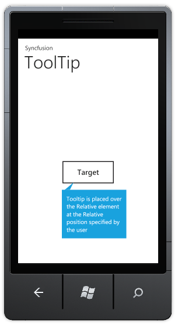

To create a Windows Phone application and deploy Essential Tools for Windows Phone, refer to section 3 Getting Started. This section covers how to add Tooltip control to this application.
The Tooltip control can be added to the application using either Xaml or procedural code. The following code illustrartes this:
|
[XAML] <syncfusion:ToolTip RelativeTo="Button1" IsBackKeyClose="True" IsTapOutside="True" RelativePlacement="Bottom" x:Name="tooltip" Content="Tooltip is placed over the Relative element at the Relative position specified by the user" />
|
|
[C#] Syncfusion.Phone.Tools.Controls.ToolTip _tooltip=new Syncfusion.Phone.Tools.Controls.ToolTip(); _tooltip.RelativeTo="Button1"; _tooltip.RelativePlacement=Syncfusion.Phone.Tools.Controls.Placement.Bottom; _tooltip.IsBackKeyClose=true; _tooltip.IsTapOutside=true; _tooltip.Content="Tooltip is placed over the Relative element at the Relative position specified by the user"; |

Figure 105: Tooltip